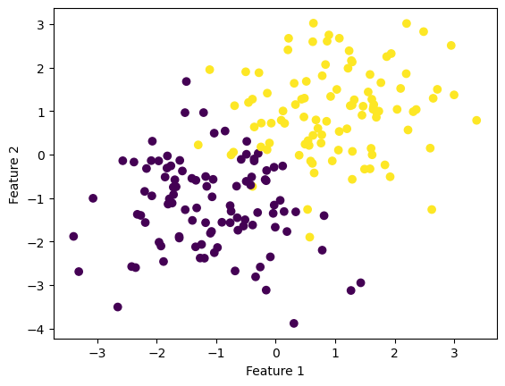
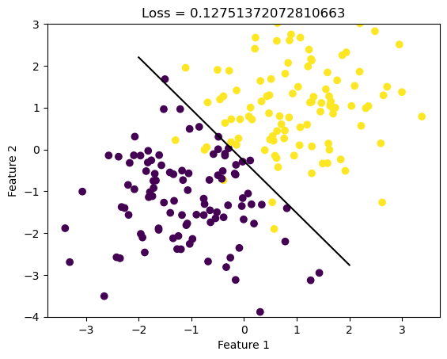
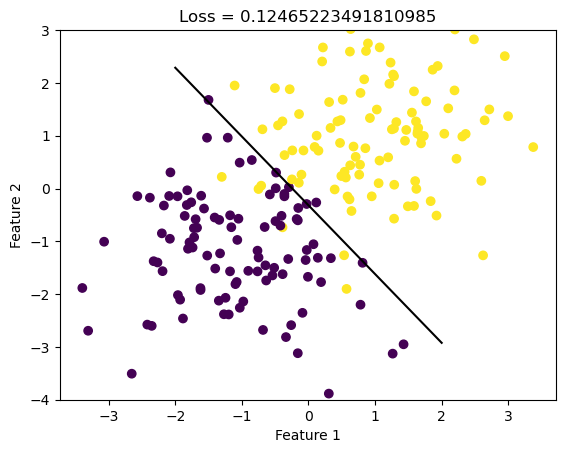
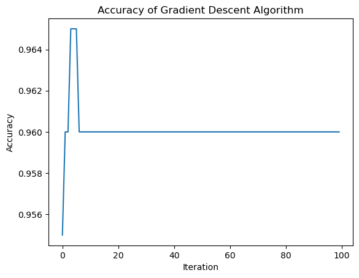
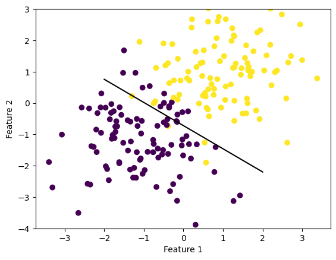

Below is a nonseparable data in which we will apply the gradient descent and stochastic gradient descent methods on.
Code
from sklearn.datasets import make_blobsfrom matplotlib import pyplot as pltimport numpy as npnp.seterr(all='ignore') # make the datap_features =3X, y = make_blobs(n_samples =200, n_features = p_features -1, centers = [(-1, -1), (1, 1)])fig = plt.scatter(X[:,0], X[:,1], c = y)xlab = plt.xlabel("Feature 1")ylab = plt.ylabel("Feature 2")

Regular Gradient Descent
We will use gradient descent to compute a value of the parameter vector \(\tilde{w}\). Here, convergence for gradient descent is declared when the improvement in the function is small enough in magnitude. Fit() utilizes the following function to obtain the gradient of the empirical risk for logistic regression:
Then, we can do logistic regression by choosing a learning rate and iterating the update \(\mathbf{w}^{(t+1)} \gets \mathbf{w}^{(t)} - \alpha \nabla L(\mathbf{w}^{(t)})\) until convergence.
Code
from LogisticRegression import LogisticRegressionLR = LogisticRegression()LR.fit(X, y, 0.1, 1000)def draw_line(w, x_min, x_max): x = np.linspace(x_min, x_max, 101) y =-(w[0]*x + w[2])/w[1] plt.plot(x, y, color ="black")fig = plt.scatter(X[:,0], X[:,1], c = y)fig = draw_line(LR.w, -2, 2)plt.ylim(-4,3)xlab = plt.xlabel("Feature 1")ylab = plt.ylabel("Feature 2")loss = LR.loss(X, y)title = plt.title(f"Loss = {loss}")

Accuracy of Regular Gradient Descent
Code
print("Evolution of the score over the training period (last few scores):") print(LR.score_history[-10:]) #just the last few scoresfig = plt.plot(LR.score_history)xlab = plt.xlabel("Iteration")ylab = plt.ylabel("Accuracy")title = plt.title("Accuracy of Gradient Descent Algorithm")
Evolution of the score over the training period (last few scores):
[0.905, 0.905, 0.905, 0.905, 0.905, 0.905, 0.905, 0.905, 0.905, 0.905]
Empirical Risk of Regular Gradient Descent
Code
print("Evolution of the loss over the training period (last few losses):") print(LR.loss_history[-10:]) #just the last few lossesfig = plt.plot(LR.loss_history)xlab = plt.xlabel("Iteration number")ylab = plt.ylabel("Empirical Risk")title = plt.title("Evolution of the Loss Function")
Evolution of the loss over the training period (last few losses):
[0.21435661719329205, 0.21435437290179798, 0.21435214223738122, 0.21434992511071996, 0.21434772143313857, 0.21434553111660243, 0.21434335407371247, 0.2143411902177004, 0.21433903946242322, 0.21433903946242322]
Stochastic Gradient Descent
In stochastic gradient descent, we pick a random subset \(S \subseteq [n] = \{1, \ldots, n\}\) and compute:
Again, convergence is declared when the improvement in the function is small enough in magnitude.
Code
LR = LogisticRegression()LR.fit_stochastic(X, y, 0.1, 100, 10)fig = plt.scatter(X[:,0], X[:,1], c = y)fig = draw_line(LR.w, -2, 2)plt.ylim(-4,3)xlab = plt.xlabel("Feature 1")ylab = plt.ylabel("Feature 2")loss = LR.loss(X, y)title = plt.title(f"Loss = {loss}")

Accuracy of Stochastic Gradient Descent
Code
print("Evolution of the score over the training period:") print(LR.score_history[-10:]) #just the last few scoresfig = plt.plot(LR.score_history)xlab = plt.xlabel("Iteration")ylab = plt.ylabel("Accuracy")title = plt.title("Accuracy of Gradient Descent Algorithm")
Evolution of the score over the training period:
[0.905, 0.905, 0.905, 0.905, 0.905, 0.905, 0.905, 0.905, 0.905, 0.905]

Empirical Risk of Stochastic Gradient Descent
Code
print("Evolution of the loss over the training period:") print(LR.loss_history[-10:]) #just the last few scoresfig = plt.plot(LR.loss_history)xlab = plt.xlabel("Iteration number")ylab = plt.ylabel("Empirical Risk")title = plt.title("Loss Function for Stochastic Gradient")
Evolution of the loss over the training period:
[0.21403943517519097, 0.2140335952527328, 0.21402473735950522, 0.21401898947249834, 0.21401196898497912, 0.2140063406393516, 0.21400308061695605, 0.2139993067707164, 0.21400099266021147, 0.21400099266021147]
Nonconvergence in Gradient Descent
Below is an illustration in which gradient descent does not converge to a minimizer because the learning rate \(\alpha\) is too large.
Code
LR = LogisticRegression()LR.fit(X, y, 500, 1000)def draw_line(w, x_min, x_max): x = np.linspace(x_min, x_max, 101) y =-(w[0]*x + w[2])/w[1] plt.plot(x, y, color ="black")fig = plt.scatter(X[:,0], X[:,1], c = y)fig = draw_line(LR.w, -2, 2)plt.ylim(-4,3)xlab = plt.xlabel("Feature 1")ylab = plt.ylabel("Feature 2")

Choice of Batch Size in Stochastic Gradient Descent
Below is an illustration in which the choice of batch size influences how quickly the algorithm converges.